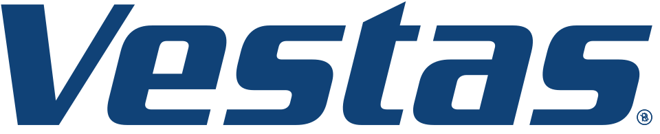

베스타스 Vestas
베스타스(Vestas)는 1945년에 설립된 덴마크의 풍력 터빈 제조업체이다. 풍력 터빈의 제조와 판매, 설치, 정비를 하며 본사는 오르후스에 있다.
최종 업데이트

베스타스는 어떤 브랜드인가
베스타스는 풍력 터빈을 제조하고 판매하며 설치와 정비까지 맡는 덴마크 기업이다. 덴마크, 독일, 네덜란드, 대만, 인도, 이탈리아, 루마니아, 영국, 스페인, 스웨덴, 노르웨이, 호주, 중국, 브라질, 폴란드, 미국에 제조 공장을 운영하며 전 세계에서 37,000명을 고용한다.
2019년 기준으로 5개 대륙 80개국 이상에 66,000기 이상의 풍력 터빈을 설치했으며 설치 용량은 100 GW이다. 2019년 1월 9일 기준으로는 12개국 이상에 생산 시설을 갖췄고 그중에는 중국, 스페인, 미국이 있다.
2026년 기준으로 세계 7위 규모의 풍력 터빈 기업이다. 2003년에는 덴마크의 풍력 터빈 제조사 NEG Micon과 합병해 당시 세계 최대 풍력 터빈 제조사가 되었다.
베스타스는 어떻게 시작되고 성장했나
뿌리는 1898년 Hans Smith Hansen이 서유틀란트의 Lem에서 대장간을 사들여 가족 사업으로 운영한 데서 시작한다. 제2차 세계대전 이후인 1945년 그의 아들 Peder Hansen이 'Vestjysk Stålteknik A/S'라는 이름으로 회사를 설립했다.
처음에는 가전제품을 만들다가 1950년 농기계, 1956년 인터쿨러, 1968년 유압 크레인으로 중심을 옮겼다. 1979년 풍력 터빈 산업에 진입했고 1989년부터는 풍력 터빈만 생산했다.
2003년 NEG Micon과 합병하며 Vestas Wind Systems라는 이름 아래 세계 최대 풍력 터빈 제조사가 되었다.
베스타스의 브랜드 아이덴티티는 무엇인가
덴마크의 대장간에서 출발해 1989년부터 풍력 터빈만 생산해 온 풍력 터빈 전문 기업이며, 제조에서 설치와 정비까지 직접 맡는다.
베스타스의 대표 제품과 서비스는 무엇인가
사업은 풍력 터빈의 제조, 판매, 설치, 정비로 구성된다. 회사는 1979년 풍력 터빈 산업에 진입한 뒤 1989년부터 풍력 터빈만 생산해 왔다.
1997년에는 NTK 1500/60을 생산에 투입했다. 이 제품은 Timothy Jacob Jensen이 디자인했으며 독일 IF Award와 Red Dot Award를 받았다.
2009년 2월에는 3메가와트급 V112와 1.8메가와트급 V100 두 가지 신규 터빈을 발표했고 두 모델은 2010년에 출시될 예정이었다.
베스타스는 지금 어떤 상태인가
2026년 기준으로 세계 7위 규모의 풍력 터빈 기업이며 전 세계 직원은 37,000명이다. 덴마크, 독일, 미국 등 16개국에 제조 공장을 두고 있다.
영국 와이트섬 공장은 2009년 7월 폐쇄 계획이 발표되어 와이트섬에서 525개, 사우샘프턴에서 100개 일자리가 영향을 받을 예정이었으나, 2026년 3월 기준으로 계속 가동 중이다.
베스타스 로고는 어떻게 변해왔나
자주 묻는 질문
베스타스는 어느 나라 브랜드인가요?
베스타스는 덴마크의 에너지·산업재 브랜드입니다.
베스타스는 언제 설립되었나요?
베스타스는 1945년 설립되었습니다.
베스타스의 브랜드 아이덴티티는 무엇인가요?
덴마크의 대장간에서 출발해 1989년부터 풍력 터빈만 생산해 온 풍력 터빈 전문 기업이며, 제조에서 설치와 정비까지 직접 맡는다.
베스타스의 대표 제품은 무엇인가요?
사업은 풍력 터빈의 제조, 판매, 설치, 정비로 구성된다.
베스타스는 현재 어떤 상태인가요?
2026년 기준으로 세계 7위 규모의 풍력 터빈 기업이며 전 세계 직원은 37,000명이다.
베스타스의 본사는 어디에 있나요?
베스타스의 본사는 오르후스에 있습니다(위키데이터 기준).
베스타스의 공식 웹사이트는 어디인가요?
베스타스의 공식 웹사이트는 https://www.vestas.com 입니다.
출처와 검증
베스타스 관련 참고: 공식 웹사이트 · 위키데이터 Q868259 · 한국어 위키백과 · 영어 위키백과. 브랜드명은 한글과 원어를 함께 표기하되 데이터에 없는 표기는 만들지 않습니다. 기원 국가·설립연도는 검수된 정의문에서 확인된 값을 우선하고, 없을 때만 공식 웹사이트 URL이 일치하는 위키데이터 개체의 값을 씁니다. 위키데이터 값은 2026-11-11 기준입니다.